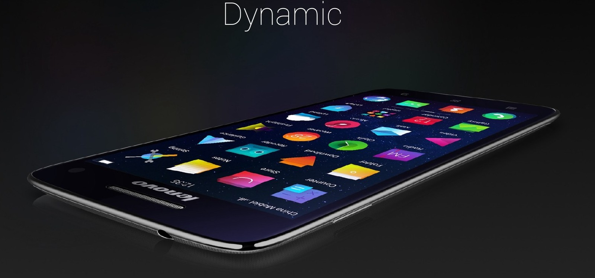
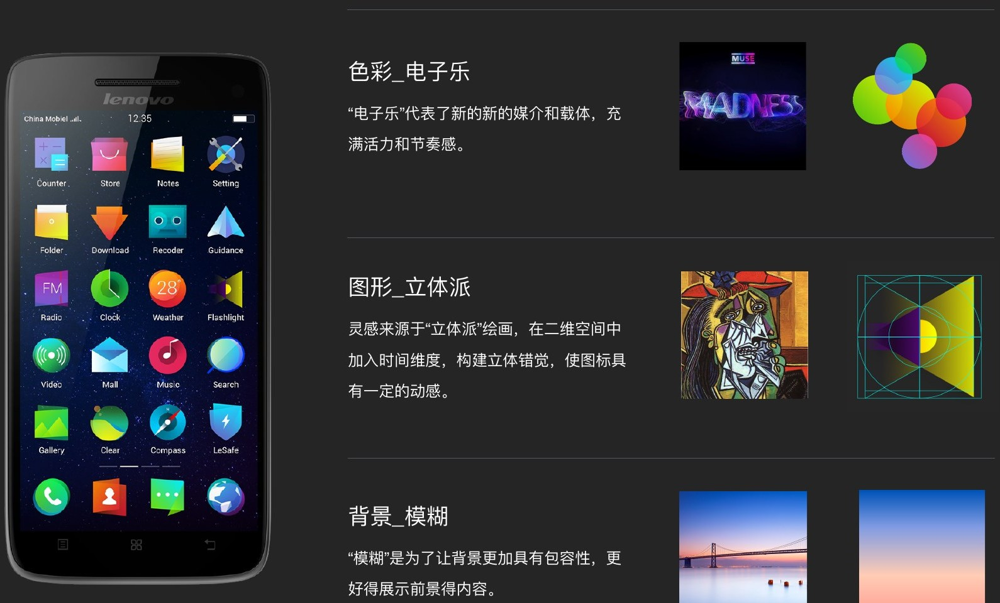
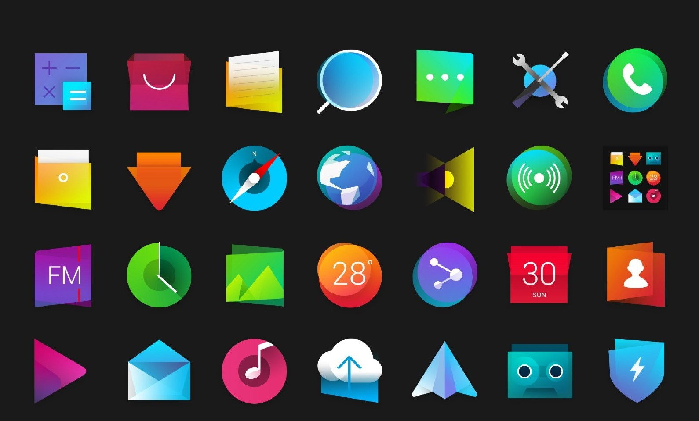
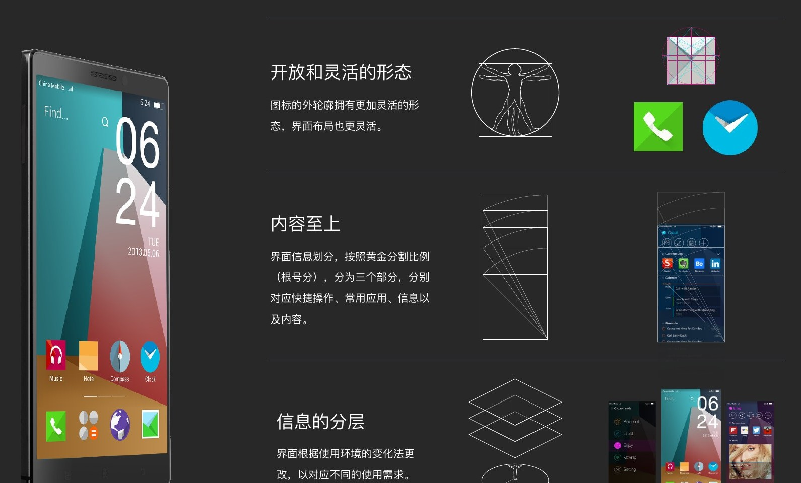
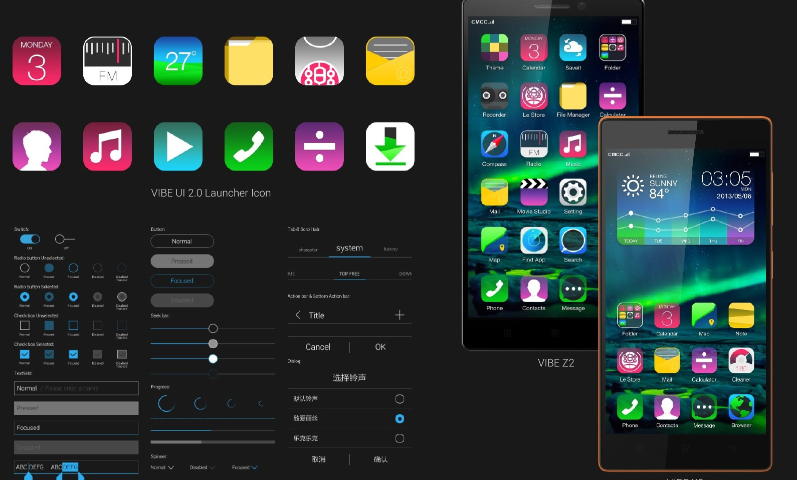

06 / MOBILE SYSTEM
联想 VIBE UI
从视觉语言到系统体验
以 Dynamic 与 Live Launcher 概念探索为起点，展示移动系统中的图形语言、信息结构及 VIBE UI 产品界面。
- 时期
- 2011—2014 · 联想时期
- 方向
- 移动系统 GUI 设计
- 范围
- 概念探索 / 图标系统 / Launcher

01
用明确的设计来源构建视觉语言
Dynamic 概念以立体派图形、电子乐色彩与模糊背景建立视觉方向。图形在二维空间中营造立体错觉，色彩传达活力与节奏。
背景的处理服务于前景内容的辨认。三种要素共同构成视觉语言的基础，并继续延展到图标和系统界面。

02
让单个图标形成一个系统
图标既要传达功能，也要在成组出现时保持共同的视觉性格。概念方案通过形态、色彩与层次建立家族感。
不同应用保留各自的识别线索，在一致的视觉规则下形成丰富度。这一部分属于概念探索，区别于后续产品化界面。

03
让桌面适应内容与使用情境
Live Launcher 探索开放、灵活的图标形态与界面布局，将快捷操作、常用应用、信息与内容分层组织。
概念中，信息根据使用环境变化而调整。重点是把桌面从静态应用入口扩展为能够承载不同需求的信息空间。

04
将系统语言延伸到产品界面
作品集同时展示了 VIBE X2、Z2 与 VIBE UI 2.0 的产品界面、Launcher 图标和系统控件。
这一组内容把产品、系统入口与控件放在一起观察，呈现移动系统设计中跨层级保持一致性的工作。概念探索与产品界面分别展示，避免将二者混为同一交付。
图文依据：LIYOU PORTFOLIO 2024，第 62—75 页。文字依据作品图示整理。
NEXT / 全部作品 ↗